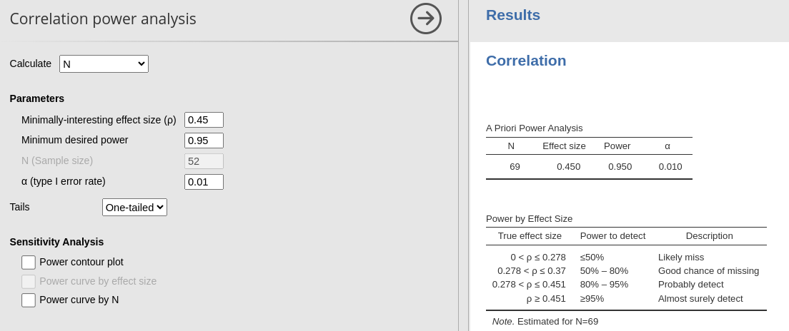

Correlation
Power Analysis
0.1.0
Here we compare the results of PAMLj with other software that performs power analysis. In particular, we will compare our results with R pwr package and G*Power.
Correlation
For Pearson and Spearman correlation, we can compare PAMLj with R pwr package and
G*Power. Consider, however, that for this task PAMLj employs R pwr package under
the hood, so the results are obviously in line. For G*Power, the
comparison represents a proper validation. All packages use the inverse
hyperbolic tangent transformation (Cohen 1988).
Example 1
- Aim = Sample size
- Expected r = .3
- Required power = .8
- Alpha = .05
PAMLj
R
##
## approximate correlation power calculation (arctangh transformation)
##
## n = 84.07364
## r = 0.3
## sig.level = 0.05
## power = 0.8
## alternative = two.sidedG*Power

If we round the results, they are the same
Example 2
- Aim = power
- Expected r = .4
- N = 52
- Alpha = .05
PAMLj

R
##
## approximate correlation power calculation (arctangh transformation)
##
## n = 52
## r = 0.4
## sig.level = 0.05
## power = 0.8485972
## alternative = two.sidedG*Power

Results are the same at the third decimal place, which can be consider quite good.
Example 3
- Aim = minimal effect size
- power = .95
- N = 52
- Alpha = .01
PAMLj

R
##
## approximate correlation power calculation (arctangh transformation)
##
## n = 52
## r = 0.5369775
## sig.level = 0.01
## power = 0.95
## alternative = two.sidedG*Power

Again, rounding a the third decimal place, results are the same.
Example 4
- Aim = Sample size
- power = .95
- Expected r = .45
- Alpha = .01
- Tails = “two.sided”
PAMLj

R
##
## approximate correlation power calculation (arctangh transformation)
##
## n = 69.45436
## r = 0.45
## sig.level = 0.01
## power = 0.95
## alternative = greaterG*power

In this case, notice that PAMLj yield 69, which is rounded for 69.45, whereas G*Power round it up to 70. Thus, results are quite in line.
Comments?
Got comments, issues or spotted a bug? Please open an issue on PAMLj at github or send me an email
Back to